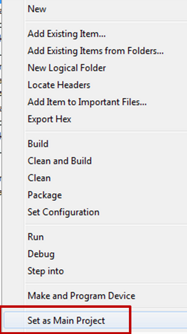
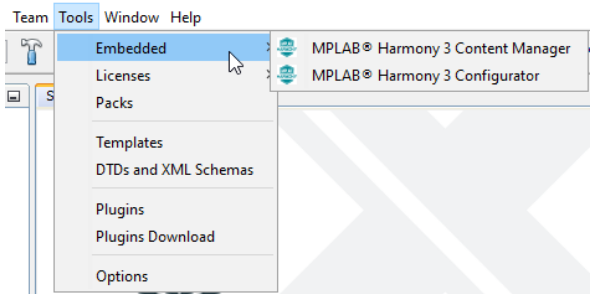
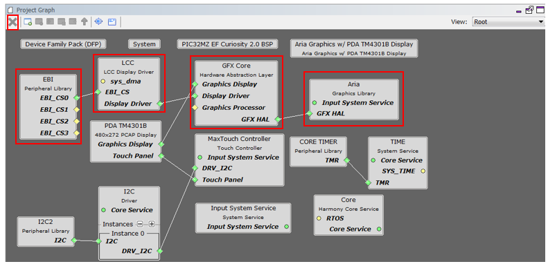
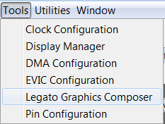
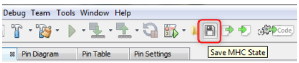
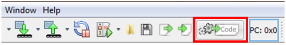
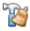
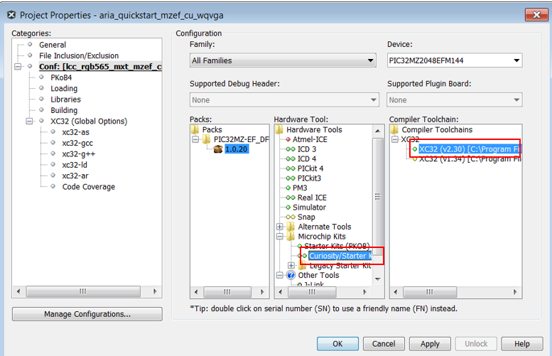
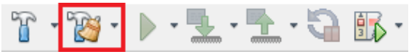
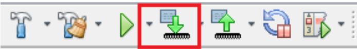

|
MPLAB® Harmony Graphics Suite
|
The following step-by-step instructions take you through the changes required to port the aria_quickstart "aria_quickstart_mzef_cu_wqvga" application to Legato:
1. Open the Aria Quickstart project using MPLABX.
2. Set a Main Project

3. Launch MPLAB Harmony Configurator (MHC)

4. Remove components from the Project Graph

5. Add Legato graphics library
Under the Available Components tab, expand Graphics > Middleware.
Select and double click on Legato to add the Legato graphics library to the project.
6. Add LE Display Driver
On the Legato Component, connect, LE Display Driver to LE LCC Display Driver.
Confirm Component Auto-Activation. When prompted with the message "Are you sure you want to activate these components?" GFX Core LE (gfx_hal_le), select Yes.
7. Add PDA 4.3" Graphics Display
On the LE LCC component, connect Graphics Display to PDA TM4301B.
8. Add LE Display Driver
On the LE LCC component, connect EBI_CS to EBI Peripheral Library.
9. Import existing GUI design

10. Generate Code


11. Examine the generated code for Legato as shown below.
12. Navigate to the Projects tab to view the project tree structure
13. Build the code by clicking on the Clean and Build icon  and verify that the project builds successfully.
At this point, you are ready to start implementing your application code.
14. Build, program, and observe graphics user interface



The application should build and program successfully.
15. Verify GUI design on display and button press
|
MPLAB® Harmony Graphics Suite
|